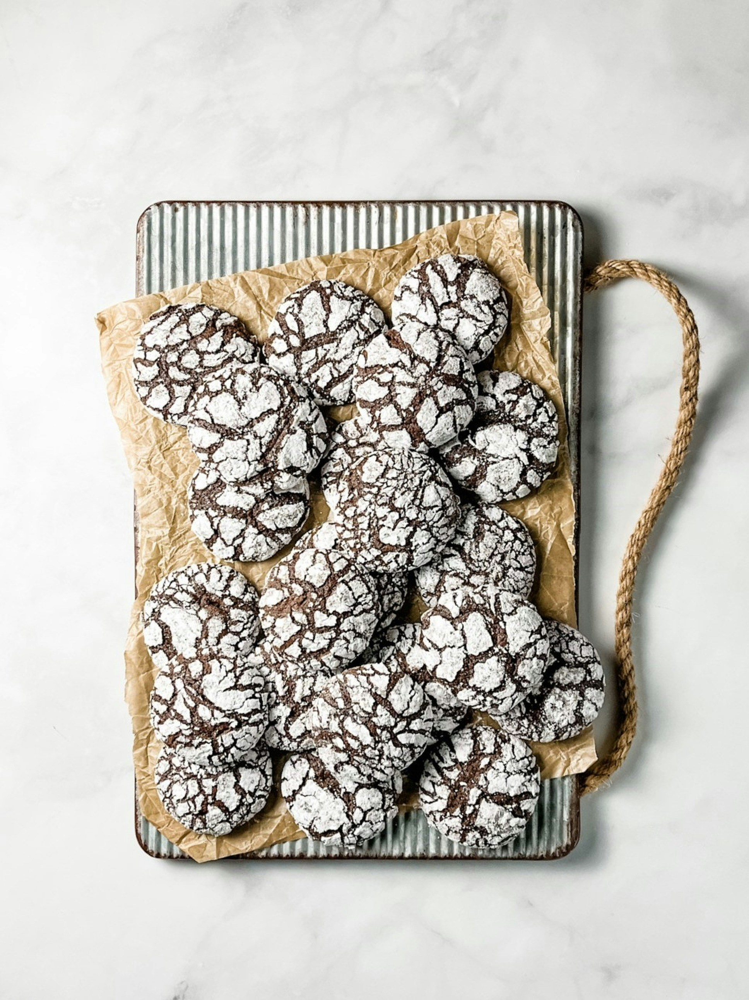

Crinkle Cookies

Ingredients
- 1 cup unsweetened cocoa powder
- 2 cups granulated sugar
- 1/2 cup unsalted butter
- 4 eggs
- 2 teaspoon vanilla extract
- 1/2 teaspoon salt
- 2 teaspoons baking powder
- 2 cups all-purpose flour
- 1/2 cup powdered sugar
Steps
- In the bowl of a stand mixer, beat the cocoa, granulated sugar, and butter (or oil) on medium speed. Reduce the speed to low and add the eggs one at a time, mixing until combined.
- Mix in the remaining ingredients in the order listed, except for the powdered sugar. Cover the bowl with plastic wrap and chill in the refrigerator for 4 hours.
- Preheat the oven to 350°F (176°C). Line cookie sheets with parchment paper. Roll the dough into 1-inch balls and coat them with powdered sugar. Place the cookies on the prepared baking sheets, at least 2 inches apart.
- Bake for 10 minutes. Allow the cookies to rest on the hot cookie sheet for 1 minute before transferring them to a wire rack to cool completely.
Notes
- I use high-quality cocoa powder, like Valrhona, Ghirardelli, or Guittard, for a rich, fudgy flavor. Avoid Dutch-process cocoa, as it may alter the taste.
- To get the cookies extra white with powdered sugar, I coat each dough ball generously before baking. This thick layer ensures the powdered sugar won't absorb during bake time, keeping the cookies bright and giving them that perfect cracked appearance.
- Chilling the dough in the refrigerator for at least 4 hours helps firm it up, making it easier to roll into balls and ensures a better crack in the cookies.
- I let them cool on the baking sheet for 1 minute before transferring to a wire rack. This prevents them from breaking apart and helps them set properly.
Back to Home